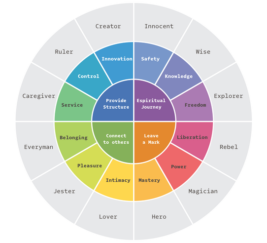

Design & CSS
Table of Contents
- 1. Good design has
- 2. Basics of design
- 3. CSS Grid
- 4. CSS Flexbox
- 5. Common Design Techniques
- 5.1. Nearly white background and white containers, works similarly in dark mode
- 5.2. White works well with pretty much all primary colors
- 5.3. Photographs, blend them in well
- 5.4. Illustrations
- 5.5. Bold type, especially headlines
- 5.6. Mix serif and sans
- 5.7. Watermarks
- 5.8. Fill UI with small details
- 6. Remove heading but leave html export
1 Good design has
1.1 Musts:
1.2 No visual clutter
1.3 Theme + Color Splash
1.4 Pick graphics
1.5 Feedback
- One feedback is no feedback!
2 Basics of design
2.1 Emotion
- Timeless
- Not bound to languages, translates across to anyone
2.2 Communicate visually
2.3 Plan
- Name of the Project
- Purpose: what are we trying to communicate?
- Audience: who are we communicating to?
2.4 Mood board
- Collage of inspirations
- Potential inspirations:
- Art
- Nature
- Web pages
- Anything that clicks or is associated
2.5 Practice proximity; Layouts
- Make different versions of it, especially if indecisive
- Take elements that go together and group them
- Embrace negative space, utilize empty space to create focus areas
2.6 Alignment
- Do not float things around
- Anchor things to each other, like text + image or text + graphic
- Keep consistent
- Use grids
2.7 Fonts
- General
- Does this complement the purpose of the design?
- What's the message of the design? Match a font to it.
- Make cheat sheets of fonts to go back to that match a specific design
- Font types:
- Serif: with little feet
- Sans: No feet, looks clean
- Display: Headlines, use in moderation
- Opposites attract
- Mix Sans & Serif, Bold & Light to create contrasts
- Make sure the fonts have the same "message"
- Preferably use the same font family
- Try:
- Expressive vs Neutral
- Tall vs Short
- Serif vs Sans
2.8 Make it Pop!
- Grab attention via focal points
- Need contrast
- Dark vs Light
- Big vs Small
- Bold vs Fine
- Remember: When everything stands out, nothing stands out!
2.9 Colors
- General
- Understand meaning behind color
- Pick a hero color for the design
- Find complementary colors to match the hero color
- Color wheel:
- Analogous: next to each other
- Complementary: opposite (i.e. contrast)
- Split complementary: is a narrow triangle
- Triadic: is a triangle
- Some meaning behind colors
- Red + Orange: Attract attention + engage in activity
- Blue + Green: Calming, quiet spaces, trust
- Warm colors: Energize
- Cool colors: Calm
- Yellow: Warning
- Red: Excitement + hunger
- Blue: Safety + security
- Tints & Shades
- Broaden your pallet with tints and shades
- Do not worry about creating subtle tints and shades from the theme colors
2.10 Photos
- Can communicate and idea in an instant
- Right photo can transform the design
- Avoid cheesy cliche:
- Relevant but unique
- Scale to a focal point:
- Additionally crop to remove distractions
- Add contrast to your text and look for negative space
2.11 Branding
- General
- More than a logo
- A promise to customers
- Purpose needs clear description
- Long thinking
- Impact you want to have on the world
- Why does the brand exist?
- Example: Tesla wants to transition cars towards green energy
- Values: distinct and actionable
- Tribe
- Who are you talking to?
- What do they need?
- What is the paypoint?
- "Find your niche and you'll find your tribe"
- Narrow down focus
- Do not try to please everyone
- Demographics
- What are their desires
- What makes them tick?
- Really get to know your customer
- Personality
- People are attracted to people alike, same goes for brand attraction
- Its free!!!
- Scale:
- Playful ⇆ Serious
- Youthful ⇆ Mature
- Mass ⇆ Elite
Explore brand archetypes by Carl Jung

- Name
- Meaningful, future proof, available
- Get a group involved to brain storm
- Make sure that the brand name does not have weird translations (native or foreign)
- Name buckets:
- Descriptive: describe what you do, e.g. "Whole Foods"
- Emotive: feeling or experience, e.g. "Amazon"
- Inventive: weird and wonderful, e.g. "Google"
- Logo
- One of the most important things in a brand
- Keep it simple, stupid! (KISS)
- Clarity
- Simplicity
- Symbol + Word Mark: one or the other, or both!
- Font
- Who are you?
- How you articulate that?
- Typography needs to match the era and business goals
- Tone
- Find a person that mimics your brand and learn off them
- Mind your tone
- "Not what you say, its how you say it!"
- General toolkit
- Colors/Theme
- Typography
- Logo
- Imagery style, graphics style
- Evolve
- Evolve with your people!
- Evolve to stay relevant!
- Evolve with technology!
3 CSS Grid
3.1 Setup
- HTML setup
<div class="parent"> <div class="child1"> Box 1 </div> <div class="child2"> Box 2 </div> <div class="child3"> Box 3 </div> </div>
- Parent css
.parent { display: grid; grid-template-columns: 33% 33% 33%; }
- Keep in mind that you can fractions as css units, e.g.:
grid-template-columns: 1fr 2fr 1frwill give 25% 50% 25% - You can also add rows if needed:
grid-template-rows
3.2 Placing boxes in specific grid places
- Same applies for columns and rows
- Method 1
.child1 { grid-column-start: 1; /* Starts at 1, not 0 */ grid-column-end: 3; }
- Method 2 (shorthand)
.child1 { grid-column: 1/3; grid-row: 1/2; }
- Method 3 (full layout description)
- This needs to placed in the parent
- Now the boxes will be placed as per
grid-template-areas. Please note that a.leaves an empty space.
.parent { height: 100vh; display: grid; grid-template-columns: 33% 33% 33%; grid-template-columns: repeat(3, 33%); /* Alternative */ grid-template-columns: repeat(auto-fill, 300px); /* Alternative, let css grid figure out how many columns it can fit */ grid-template-columns: repeat(auto-fit, 300px); /* Alternative, let css grid figure out how many columns it can fit but remove empty ones */ grid-template-columns: repeat(auto-fit, minmax(300px, 1fr)); /* Alternative, provide automatic responsive design */ grid-template-rows: 1fr 1fr; grid-template-areas: "box1 box2 box2" "box3 box3 ."; } .box1 { grid-area: box1; } .box2 { grid-area: box2; } .box3 { grid-area: box3; }
3.3 Justifying
- Use
justify-itemsto place the children in the grid as desired
.parent { justify-items: start; justify-items: end; justify-items: stretch; /* Will place child in the center of the grid fraction */ justify-items: center; align-items: center; }
- Use
align-selfto place specific children in the grid as desired vertically
.box1 { align-self: center; }
3.4 Place a Flexbox on the children to further get what is desired from the individual boxes.
4 CSS Flexbox
- By default flex places things horizontally
4.1 Setup
- HTML setup
<div class="parent"> <div class="child1"> Box 1 </div> <div class="child2"> Box 2 </div> <div class="child3"> Box 3 </div> </div>
- Parent css
/* RESET */ * { box-sizing: border-box; margin: 0; padding: 0; } .parent { display: flex; /* CHOOSE AN AXIS */ flex-direction: column; /* flex-direction: row; */ }
4.2 Justifying content
.parent { /* CHOOSE justify-content type */ justify-content: center; }
4.3 Aligning items
.parent { /* CHOOSE one */ /* align-items: flex-end; */ align-items: center; }
4.4 Wrapping
.parent { /* Usually use something like this */ flex-wrap: wrap; align-content: flex-start; /* OR */ flex-flow: column wrap; }
4.5 Aligning text in separate containers
.parent { align-items: baseline; }
4.6 Ordering children
.child3 { /* The default setting will show first*/ order: 0; } .child1 { /* will show second */ order: 1; } .child2 { /* will show third */ order: 2; }
4.7 Expanding/shrinking children to fill parent container
.child1 { /* works like ordering */ /* growing */ flex-grow: 1; /* shrinking */ flex-shrink: 1; /* combining, shorthand of grow, shrink and basis */ flex: 0 1 auto; }
4.8 Aligning individual children
.child1 { align-self: center; }
5 Common Design Techniques
5.1 Nearly white background and white containers, works similarly in dark mode
5.2 White works well with pretty much all primary colors
5.3 Photographs, blend them in well
5.4 Illustrations
5.5 Bold type, especially headlines
5.6 Mix serif and sans
- Usually serif for headlines
5.7 Watermarks
5.8 Fill UI with small details
- Like some vertical text or a button